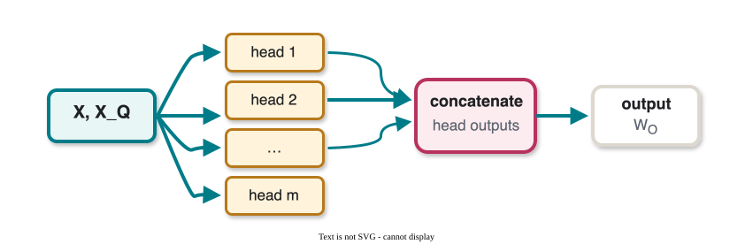
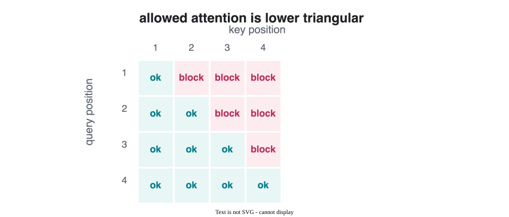
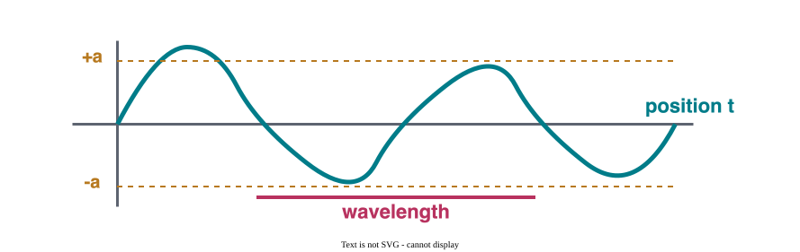
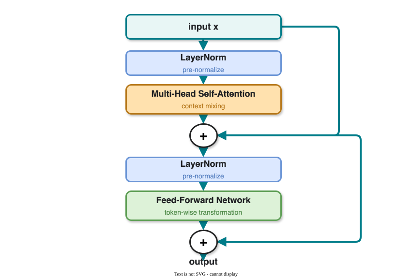
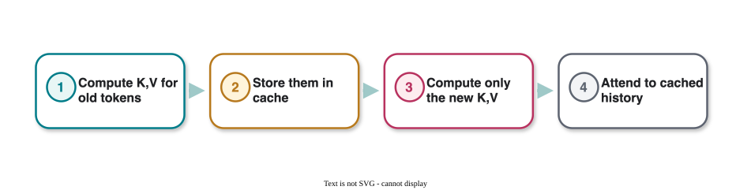
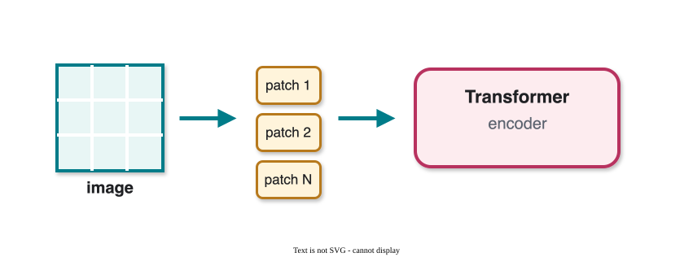
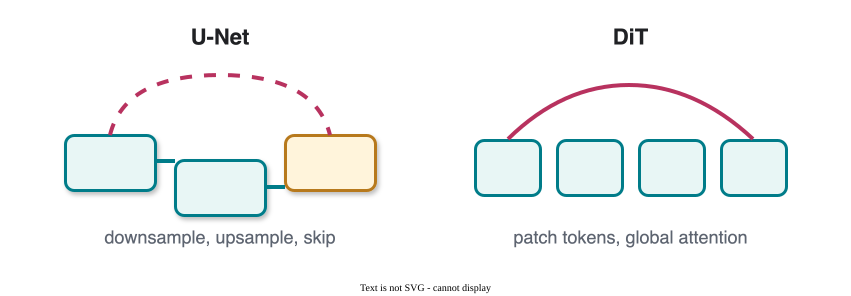
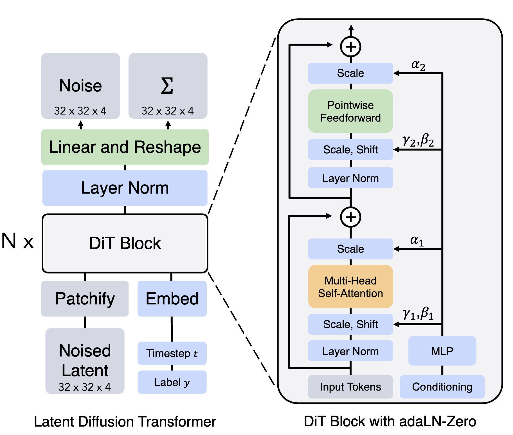

CS 463G & CS 663
(Intro to) AI
Lecture 35: Transformers (cont’d)
Fall 2026
Today: multi-head attention, decoding, causal training, positional encodings, transformer blocks, and transformers beyond language.
\operatorname{Attention}(Q,K,V) = V\cdot \operatorname{softmax}\left(\frac{K^TQ}{\sqrt{d_k}}\right)
| Term | Meaning |
|---|---|
| K^TQ | similarity scores |
| \operatorname{softmax} | converts scores into weights |
| V | content being mixed |
| \sqrt{d_k} | stabilizing scale |
Instead of one attention head, use many heads with different projections.

Different heads can attend to different relationships in the same sequence.
\operatorname{MultiHead}(\mathcal{W},X,X_Q) = W_O \begin{bmatrix} \operatorname{Attn}(W_{K,1},W_{Q,1},W_{V,1},X,X_Q)\\ \operatorname{Attn}(W_{K,2},W_{Q,2},W_{V,2},X,X_Q)\\ \vdots\\ \operatorname{Attn}(W_{K,m},W_{Q,m},W_{V,m},X,X_Q) \end{bmatrix}
The output projection W_O brings the concatenated heads back to the desired embedding dimension.
Self-attention means the sequence attends to itself:
X_Q=X
In autoregressive language modeling:
That last condition is why we need causal masking.
Given a hidden representation h:
h=\operatorname{MultiHead}(\mathcal{W},X,x_n)
Predict the next-token distribution:
\operatorname{softmax}(B^Th)
where B contains token embeddings for the vocabulary.
Logits \ell_i become probabilities through a temperature-scaled softmax:
p_i= \frac{\exp(\ell_i/T)} {\sum_j \exp(\ell_j/T)}
| Temperature | Effect |
|---|---|
| low T | sharper, more deterministic |
| T=1 | ordinary softmax |
| high T | flatter, more diverse |
Temperature changes only the sampling distribution, not the model weights.
Full-vocabulary sampling includes a long tail of tiny probabilities.
Top-K keeps only the K most likely tokens:
\tilde{s}_i= \begin{cases} s_i, & \text{if } i \text{ is among the top-}K \text{ logits},\\ -\infty, & \text{otherwise}. \end{cases}
Temperature controls sharpness; top-K controls which candidate tokens are even allowed.
Sentence:
| token 0 | token 1 | token 2 | token 3 | token 4 | token 5 |
|---|---|---|---|---|---|
<start> |
Attention | is | all | you | need |
Training examples:
| Prefix | Query token | Target next token |
|---|---|---|
<start> |
<start> |
Attention |
<start> Attention |
Attention | is |
<start> Attention is |
is | all |
<start> Attention is all |
all | you |
Rather than slicing every prefix separately, train all positions at once with a mask.
Future positions receive -\infty before softmax.

Each token can attend only to itself and earlier tokens.
Layer normalization stabilizes training.
For embedding x\in\mathbb{R}^{d_e}:
y= \frac{x-\mathbb{E}[x]} {\sqrt{\operatorname{Var}[x]+\epsilon}} \gamma+\beta
where \gamma and \beta are trainable scale and shift parameters.
Normalization keeps intermediate activations in a better numerical range.
For any permutation matrix P:
\operatorname{Attn}(W_K,W_Q,W_V,XP,X_Q) = \operatorname{Attn}(W_K,W_Q,W_V,X,X_Q)
Meaning: attention over a set of key/value tokens has no built-in notion of order.
five minus two and two minus five contain similar words, but order changes the meaning.
Add a position-dependent vector to each token embedding:
\text{embedding}(x_i,i) = \text{token encoding}(x_i) + \text{positional encoding}(i)
Sinusoidal positional encoding:
[\operatorname{PE}(t)]_j= \begin{cases} \sin\left(\frac{t}{10000^{2k/d_e}}\right),&\text{if } j=2k,\\ \cos\left(\frac{t}{10000^{2k/d_e}}\right),&\text{if } j=2k+1. \end{cases}
A sine wave has frequency and phase:
x(t)=a\sin(2\pi ft+\phi)

Different dimensions use different frequencies, so the model receives both local and long-range position signals.
For any offset t':
\sin(a+b)=\sin(a)\cos(b)+\cos(a)\sin(b)
\cos(a+b)=\cos(a)\cos(b)-\sin(a)\sin(b)
Therefore, for a sine/cosine pair with frequency \omega_k:
[\operatorname{PE}(t+t')]_{2k:2k+1} = \begin{bmatrix} \cos(t'\omega_k)&\sin(t'\omega_k)\\ -\sin(t'\omega_k)&\cos(t'\omega_k) \end{bmatrix} [\operatorname{PE}(t)]_{2k:2k+1}
The transformation depends on the relative offset t', not the absolute position alone.
RoPE applies position information inside attention by rotating query and key vectors.
R_\theta(i)= \begin{bmatrix} \cos(i\theta)&-\sin(i\theta)\\ \sin(i\theta)&\cos(i\theta) \end{bmatrix}
\tilde{q}_i=R_\theta(i)q_i,\qquad \tilde{k}_j=R_\theta(j)k_j
Many modern LLMs use RoPE because attention scores can encode relative position differences.
Using rotation identities:
\langle \tilde{q}_i,\tilde{k}_j\rangle = \langle q_i,R_\theta(j-i)k_j\rangle
Result:
A transformer block combines:
Residuals let each layer learn a refinement instead of relearning the entire representation.

Pre-LN (common in modern deep transformers)
x+\operatorname{MHSA}(\operatorname{LN}(x)) \rightarrow x+\operatorname{FFN}(\operatorname{LN}(x))
Post-LN (original Transformer style)
\operatorname{LN}(x+\operatorname{MHSA}(x)) \rightarrow \operatorname{LN}(x+\operatorname{FFN}(x))
Pre-LN is usually easier to optimize for very deep models.
During autoregressive generation, tokens are produced one at a time.
Without caching, the model recomputes keys and values for all previous tokens at every step.

KV cache is one reason deployed LLM inference can be fast enough for interactive use.
Prompt engineering is the practice of designing inputs to guide LLM outputs.
Useful habits:
Instead of Explain Transformers, try Explain Transformers in 3 bullet points suitable for a first-year CS student.
| Type | Idea |
|---|---|
| zero-shot | no examples, only an instruction |
| few-shot | show input-output examples |
| chain-of-thought style | ask for step-by-step reasoning when appropriate |
| system/instruction design | set high-level behavior, role, or constraints |
| structured output | require JSON, tables, bullets, or schemas |
Perplexity measures how well a model predicts a ground-truth sequence:
\operatorname{Perplexity} = \exp\left( -\frac{1}{N} \sum_{i=1}^N \log p(w_i\mid w_{<i}) \right)
Other common text metrics:
Metrics are useful, but they rarely capture everything humans care about.
Transformers are not just for text.
They can be applied whenever data can be represented as a sequence of tokens:
Vision Transformer (ViT) treats an image as a sequence of patches.

For an image x\in\mathbb{R}^{H\times W\times C}:
\operatorname{patch}_i\in\mathbb{R}^{P^2C}
z_i=W\operatorname{patch}_i+b,\qquad W\in\mathbb{R}^{d\times P^2C}
The resulting patch embeddings act like tokens.
Diffusion Transformers replace the convolutional denoising backbone with a transformer over latent image patches.
Paper: Scalable Diffusion Models with Transformers, Peebles and Xie, 2022.
Key idea:
| Backbone | Main structure | Strength |
|---|---|---|
| U-Net | encoder-decoder with skip connections | strong spatial inductive bias |
| DiT | transformer over latent patches | scalable global token mixing |


DiT applies transformer blocks to noisy latent patches and uses timestep/class conditioning inside the block.
Instead of running diffusion in pixel space, diffuse in a compressed latent space.
z=E(x)
Forward noising:
z_t=\sqrt{\bar{\alpha}_t}z+\sqrt{1-\bar{\alpha}_t}\epsilon
A U-Net or DiT predicts the noise in latent space, then a decoder reconstructs:
\hat{x}=D(z_0)
Latent diffusion lowers memory cost and makes high-resolution generation more practical.